Conceptos Básicos del Modelo Relacional
labelIntroducción
La introducción por Codd, muy a finales de los sesenta, de la teoría de las relaciones en el campo de las bases de datos supuso un importante paso en la investigación de los DBMS, suministrando un sólido fundamento teórico para el desarrollo, dentro de este enfoque relacional, de nuevos productos. El documento de Codd propone un modelo de datos basado en la teoría de las relaciones, en donde los datos se estructuran lógicamente en forma de relaciones ‑tablas‑, siendo un objetivo fundamental del modelo mantener la independencia de esta estructura lógica respecto al modo de almacenamiento y a otras características de tipo físico.
El trabajo publicado por Codd (1970), presentaba un nuevo modelo de datos que perseguía una serie de objetivos, que se pueden resumir en los siguientes.
Independencia física: es decir, el modo en el que se almacenan los datos no influya en su manipulación lógica y, por tanto, los usuarios que acceden a esos datos no tienen que modificar sus programas por cambios en el almacenamiento físico.
Independencia lógica: esto es, que el añadir, eliminar o modificar objetos de la base de datos no repercuta en los programas y/o usuarios que están accediendo a subconjuntos parciales de los mismos (vistas).
Flexibilidad: en el sentido de poder presentar a cada usuario los datos de la forma en que éste prefiera.
Uniformidad: las estructuras lógicas de los datos presentan un aspecto uniforme, lo que facilita la concepción y manipulación de la base de datos por parte de los usuarios.
Sencillez: las características anteriores, así como unos lenguajes de usuario muy sencillos, producen como resultado que el modelo de datos relacional sea fácil de comprender y de utilizar por parte del usuario final.
Para conseguir los objetivos citados, Codd introduce el concepto de "relación" (tabla) como una estructura básica del modelo. Todos los datos de la BD se representan en forma de relaciones cuyo contenido varía en el tiempo.
Con respecto a la parte dinámica del modelo, se proponen un conjunto de operadores que se aplican a las relaciones. Todos ellos conforman el álgebra Relacional.
El modelo está basado en la teoría de conjuntos y establece la interrelación entre los datos y su consulta en términos de un álgebra y un cálculo, que a su vez son el fundamento de SQL (Structured Query Languaje).
labelRelación
El objeto fundamental del modelo relacional es la relación, que parte de la teoría de conjuntos. Para ejemplificarlo de manera muy sencilla, consideremos los conjuntos:
Entrada = {cocktail, entremés, ensalada}
Sopa = {crema, consomé, pasta}
Plato = {filete, pescado, pollo}
Definimos la relación Comida en términos de los conjuntos anteriores, con la notación:
Comida(Entrada,Sopa,Plato)
Los conjuntos Entrada, Sopa y Plato son los dominios de la relación Comida.
Como la relación es entre tres dominios se dice que su grado o paridad es tres.
A su vez, la relación Comida es por si misma un conjunto. La forma en que podemos denotar este conjunto es:
Comida = { (cocktail, crema, filete), (cocktail, crema, pescado), (cocktail, pasta, pollo), (entremés, crema, filete), (entremés, pasta, pollo), (entremés, consomé, pescado), (ensalada, pasta, pollo), (ensalada, pasta, pescado), (ensalada, consomé, pollo) }
Cada uno de los elementos de este conjunto está formado a su vez por una tríada de elementos, en virtud de que la relación es entre tres dominios. Si la relación fuese de grado dos, sus elementos serían parejas y si fuera de grado cuatro, sus elementos serían cuartetos. Para no requerir un nombre especial que dependa del grado de la relación, se utiliza el término tupla para designar en forma generalizada a los elementos de una relación.
Si observamos las tuplas de la relación comida, no aparecen en ellas todas las combinaciones posibles de una entrada con una sopa y un plato, sino un subconjunto de ellas. La totalidad de las combinaciones entre estos tres conjuntos se denomina producto cartesiano y se denota como Entrada X Sopa X Plato. Una relación puede contener algunas o todas las tuplas del producto cartesiano de los dominios que intervienen en ella.
label_outlineCon estas nociones, podemos establecer una definición más formal de relación:
Una relación R es un subconjunto del producto cartesiano de los dominios
D1 x D2 x D3 x ...Dken donde k es el grado de la relación.
El esquema de la relación se denota como R(D1, D2, D3, ...Dk)
La relación es un conjunto de tuplas,
R= {ta,tb,tc,td,te}
donde cada una de las tuplas es de la forma:
ta(a1,a2,a3..ak),
donde a1 pertenece a D1, a2 pertenece a D2, a3 pertenece a D3 , ...ak pertenece a Dk.
label Conceptos de noción de relación
Intensión o Esquema de relación, denotado R (Al:D1, A2:D2, ..., An:Dn) es un conjunto de n pares atributo‑dominio subyacente (Ai:Di). La intensión es la parte definitoria y estática de la relación, que se corresponde con la cabecera cuando la relación se percibe como una tabla.
Extensión u ocurrencia (instancia) de relación (llamada a veces simplemente relación), denotada por r(R) es un conjunto de m tuplas {t1, t2, ... tm} donde cada tupla es un conjunto de n pares atributo‑valor.
Ejemplo:
Intensión de una relación:
AUTOR (NOMBRE:Nombres, NACIONALIDAD:Nacionalidades, INSTITUCION: Instituciones)
Extensión de una relación:
AUTOR
Nombre |
Nacionalidad |
Institucion |
Pepe |
España |
O.N.U. |
John |
EE.UU. |
O.M.S. |
Pierre |
Francia |
N.A.S.A. |
label_outline Una representación muy conveniente de una relación es la tabular.
Decimos que una relación es equivalente a una tabla en la que:
- Los nombres de las columnas corresponden a los dominios.
- Los renglones de la tabla representan las tuplas de la relación, donde el valor ubicado en el cruce del renglón a con la columna i, corresponde al valor de la tupla ta que pertenece al dominio Di.
La tabla de la relación Comida de nuestro ejemplo es:
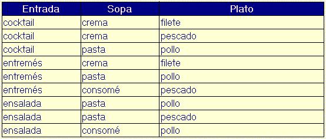
label_outline Dominio y Atributo
Un dominio D es un conjunto finito de valores homogéneos y atómicos caracterizados por un nombre; decimos homogéneos porque son todos del mismo tipo y atómicos porque son indivisibles.
Todo dominio ha de tener un nombre por el cual nos podamos referir a él y un tipo de dato; así el tipo de dato del dominio "nacionalidades" es una tira de caracteres de longitud 15.
El dominio "nacionalidades" tiene valores : España, Francia,... Si descompusiéramos España en E,s,p,... perdería la semántica.
Ejemplos de dominios serían:
· Colores: Es el conjunto de los colores D= {rojo, verde, azul,}
· Números de DNI: Es conjunto de números del DNI válidos, formados por ocho dígitos.
· Edad: Edades posibles de los empleados entre 18 y 80 años.
Un atributo es el papel que tiene un determinado dominio en una relación.
Es muy usual dar el mismo nombre al atributo y al dominio. En el caso de que sean varios los atributos de una misma tabla definidos sobre el mismo dominio, habrá que darles nombres distintos, ya que una tabla no puede tener dos atributos con el mismo nombre.
Por ejemplo los atributos edad_física y edad_mental pueden estar definidos sobre el mismo dominio edad; o los atributos precio_compra y precio_venta pueden estar definidos sobre el mismo dominio de enteros de longitud 5.
label_outline Llave primaria
Consideremos la relación Empleados, en su representación de tabla.
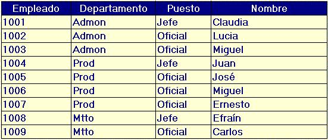
Decimos que una columna es una llave de la relación si para cualquier valor de la columna existe sólo una tupla con ese valor. En la tabla que presentamos, la única columna con esas características es Empleado ya que para cada uno de los valores de esta columna hay un (y sólo un) renglón en el que aparece el valor. Las columnas restantes por si solas no constituyen una llave ya que presentan valores que se repiten en los diferentes renglones. Una llave de una sola columna se denomina llave simple.
label_outlineLlave compuesta
Una llave también puede construirse con dos o más columnas, y en este caso se dice que se trata de una llave compuesta. Para que una pareja de columnas sea llave de una relación se requiere que cada pareja de valores aparezca en una sola tupla. Para que una tríada de columnas sea llave de la relación se requiere que cada tríada de valores de las columnas seleccionadas sea única entre las diferentes tuplas.
label_outlineEn nuestro ejemplo, tenemos lo siguiente:
- La pareja (Departamento, Nombre) es una llave de la relación ya que no existen dos renglones que tengan los mismos valores para ambas columnas.
- La pareja (Puesto,Nombre) no es una llave, el contraejemplo son los empleados 1003 y 1006, para los que la pareja (Puesto,Nombre) presenta los mismos valores.
- La tríada (Departamento, Puesto,Nombre) constituye una llave de la relación.
- Cualquier conjunto de columnas que contenga la columna Empleado es una llave de la relación, como ejemplos (Empleado,Departamento) o bien (Empleado,Puesto,Nombre). De hecho, cualquier conjunto de columnas que contiene un subconjunto de columnas que es llave, también es llave; a este tipo de conjuntos de columnas que contienen una llave se les denomina superllaves.
- El conjunto de todas las columnas es también una llave.
En el ejemplo previo, la única llave para la relación Comida es precisamente el conjunto de las tres columnas Entrada, Sopa, Plato, es decir, la relación completa.
Como se ilustra, algunas relaciones tienen una sola llave posible, mientras que otras presentan varias llaves. Al conjunto de llaves de una relación se le conoce como conjunto de llaves candidatas, las cuales son un conjunto no vacío de atributos que identifican unívoca y mínimamente cada tupla. Por la propia definición de relación, siempre hay al menos una clave candidata, ya que al ser la relación un conjunto no existen tuplas repetidas y por tanto, el conjunto de todos los atributos identificará unívocamente a las tuplas. De entre las llaves candidatas, debe seleccionarse una de ellas para definir la llave primaria de la relación; una vez seleccionada la llave primaria, el resto de las llaves candidatas se denominan llaves alternas.
Desde el punto de vista formal no hay restricción sobre cual llave de las candidatas elegir como primaria, por lo que el criterio para la selección de la llave primaria es esencialmente práctico: en principio debe buscarse la llave con el menor número de columnas posible. Otro criterio de selección entre llaves candidatas es que tan fácil les resulta a las personas que utilizan la información identificar las tuplas de la relación con una llave dada.
La llave primaria seleccionada se muestra subrayada en el esquema de la relación. Para nuestros ejemplos, los esquemas con la llave indicada son:
Comida(entrada,sopa,plato)
Empleados(empleado,departamento,puesto,nombre)
label_outline Llave foránea
Se denomina llave foránea de una relación R2 a un conjunto no vacío de atributos cuyos valores han de coincidir con los valores de la clave primaria de otra relación R1. La clave foránea y la correspondiente clave primaria han de estar definidas sobre los mismos dominios.
Consideremos nuevamente la relación Empleados, con algunas variantes en los puestos
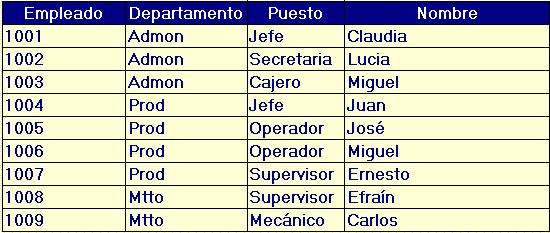Por otra parte, consideremos la relación Departamentos
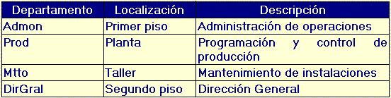
y la relación Puestos:
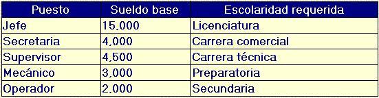En esquemas relacionales:Empleados(empleado,departamento,puesto,nombre)
Departamentos(departamento,localización,descripción)
Puestos(puesto,sueldobase,escolaridadrequerida)
Decimos que departamento y puesto son llaves foráneas en la relación Empleados ya que a su vez son llaves primarias de otras relaciones, en este caso de Departamentos y Puestos respectivamente.
label_outline Algunas observaciones importantes:
- La columna departamento en la tabla empleados sólo toma valores de los que existen en la columna departamento de la tabla departamentos.
- Del mismo modo, la columna puesto de la tabla empleados sólo toma valores de los que existen en la columna puesto de la tabla puestos.
OrdenDeServicio(NoOrden,NombreCliente,Fecha,IdResponsable)
Responsables(idResponsable,Nombre,FechaIngreso)
En este caso, idResponsable es llave foránea en OrdenDeServicio, sin embargo al
utilizar estas relaciones es común que se cree una tupla de OrdenDeServicio por ejemplo
al recibir al cliente, aunque aún no se haya asignado el responsable, es decir, el valor
para IdResponsable sería indefinido, lo cual se designa en la terminología relacional como valor
nulo. Posteriormente al asignar el responsable a la orden, el valor de la columna
idResponsable en la relación OrdenDeServicio tomará su valor de la columna
idResponsable de la relación Responsables correspondiente.
label_outline Considera la relación:
Vuelos(NúmeroVuelo,Fecha,idAvión)
en la que la llave primaria es compuesta, ya que el número de vuelo por sí solo no es único y requiere la fecha para garantizar la unicidad. Si se define la relación Boletos que refiere a Vuelos, la llave foránea también será compuesta:
Boletos(Folio,NombrePasajero,Asiento,NúmeroVuelo,Fecha)
es decir, si la llave primaria de Vuelos es de dos columnas, la llave foránea de Vuelos en Boletos incluye ambas columnas.
label Modelo relacional de una base de datos
Finalmente, un modelo relacional se construye con un conjunto de esquemas de relaciones, en las que las relaciones representadas se refieren unas a otras por medio de llaves foráneas y tienen un propósito común:
- Información de una empresa
- Información de un proceso de una empresa
- Información de un ámbito de interés.
labelRestricciones
En el modelo relacional, existen restricciones, es decir, estructuras u ocurrencias no permitidas, siendo preciso distinguir entre restricciones inherentes y restricciones de usuario.
label_outlineRestricciones inherentes
Además de las derivadas de la definición matemática de "relación" como eran que:
No hay dos tuplas iguales.
El orden de las tuplas no es significativo.
El orden de los atributos (columnas) no es significativo.
Cada atributo sólo puede tomar un único valor del dominio, no admitiéndose por tanto los grupos repetitivos.
Tenemos que la regla de integridad de entidad establece que "Ningún atributo que forme parte de la clave primaria de una relación puede tomar un valor nulo"; esto es, un valor desconocido o inexistente. Esta restricción debería aplicarse también a las claves alternativas, pero el modelo no lo exige.
label_outlineRestricciones de usuario
Podemos considerar la restricción de usuario, dentro del contexto relacional, como un predicado definido sobre un conjunto de atributos, de tuplas o de dominios, que debe ser verificado por los correspondientes objetos para que éstos constituyan una ocurrencia válida del esquema.
Dentro de las restricciones de usuario destaca la restricción de integridad referencial que dice que los valores de clave foránea deben coincidir con los de clave primaria asociada a ella o ser nulos.
La integridad referencial es una restricción de comportamiento ya que viene impuesta por el mundo real y es el usuario quien la define al describir el esquema relacional; es también de tipo implícito, ya que se define en el esquema y el modelo la reconoce (o así algunos productos) sin necesidad de que se programe ni de que se tenga que escribir ningún procedimiento para obligar a que se cumpla.
EDITORIAL (NOMBRE_E, DIRECCION, CIUDAD, PAIS)
LIBRO (CODIGO, TITULO, IDIOMA, ..., NOMBRE_E)
En este ejemplo el atributo nombre_e de la relación LIBRO es clave foránea que referencia a EDITORIAL, de modo que debe concordar con la clave primaria de la relación EDITORIAL o bien ser nulo, porque los libros de nuestra base de datos deberán pertenecer a una editorial existente, o si se desconoce la editorial, no se tendrá ningún valor para este atributo.
AUTOR (NOMBRE, NACIONALIDAD, INSTITUCION, ..)
LIBRO (CODIGO, TITULO, IDIOMA, EDITORIAL, ...)
ESCRIBE (NOMBRE, COD LIBRO)
En este ejemplo la relación ESCRIBE posee dos claves foráneas: nombre,que referencia a la relación AUTOR, y cod_libro, que referencia a la relación LIBRO; en este caso ninguna de las dos claves foráneas puede tomar valores nulos, ya que forman parte de la clave primaria de la relación ESCRIBE.
Además de definir las claves foráneas, hay que determinar las consecuencias que pueden tener ciertas operaciones (borrado y modificación) realizadas sobre tuplas de la relación referenciada; pudiéndose distinguir, en principio, las siguientes opciones:
- Operación restringida: esto es, el borrado o la modificación de tuplas de la relación que contiene la clave primaria referenciada; sólo se permite si no existen tuplas con dicha clave en la relación que contiene la clave foránea. Esto nos llevaría, por ejemplo, a que para poder borrar una editorial de nuestra base de datos no tendría que haber ningún libro que estuviese publicado por dicha editorial, en caso contrario el sistema impediría el borrado.
- Operación con transmisión en cascada: esto es, el borrado o la modificación de tuplas de la relación que contiene la clave primaria referenciada lleva consigo el borrado o modificación en cascada de las tuplas de la relación que contienen la clave foránea. En nuestro ejemplo, equivaldría a decir que al modificar el nombre de una editorial en la relación EDITORIAL, se tendría que modificar también dicho nombre en todos los libros de nuestra base de datos publicados por dicha editorial.
- Operación con puesta a nulos: esto es, el borrado o la modificación de tuplas de la relación que contiene la clave primaria referenciada lleva consigo poner a nulos los valores de las claves foráneas de la relación que referencia. Esto nos llevaría a que cuando se borra una editorial, a los libros que ha publicado dicha editorial y que se encuentran en la relación LIBROS se les coloque el atributo nombre_e a nulos. Esta opción, obviamente, sólo es posible cuando el atributo que es clave foránea admite el valor nulo.
- Operación con puesta a valor por defecto: esto es, el borrado o la modificación de tuplas de la relación que contiene la clave primaria referenciada lleva consigo poner el valor por defectoa la clave foránea de la relación que referencia.
- Operación que desencadena un procedimiento de usuario: en este caso, el borrado o la modificación de tuplas de la tabla referenciada pone en marcha un procedimiento definido por el usuario.
labelEl MODELO RELACIONAL Y LA ARQUITECTURA ANSI
El modelo relacional puede examinarse en el marco de la arquitectura ANSI a tres niveles. Todos los objetos que hemos visto hasta el momento, esto es, los dominios, relaciones, claves y restricciones constituyen el esquema conceptual de la arquitectura ANSI. Las relaciones se denominan tablas base o reales, ya que tienen una representación directa en el almacenamiento interno.
Existe otro tipo de tablas, denominadas tablas virtuales o vistas, que se definen sobre una o más tablas base. Las vistas son ventanas sobre tablas reales, de las que sólo se almacena su definición, y no tienen, por tanto, representación directa en el almacenamiento; equivalen al esquema externo de la arquitectura ANSI.
Por lo que respecta al esquema interno, el modelo relacional no especifica absolutamente nada puesto que se trata de un modelo lógico. Vemos, por tanto, que, el modelo relacional teórico se adapta bastante bien a la arquitectura ANSI.
labelLOS VALORES NULOS EN EL MODELO RELACIONAL
Se puede definir el valor nulo como una marca utilizada para representar información desconocida. La necesidad de valores nulos es evidente por diversas razones:
- Existencia de tuplas con ciertos atributos desconocidos en ese momento.
- Necesidad de añadir un nuevo atributo a una tabla ya existente; atributo que en el momento de introducirse no tendrá ningún valor para las tuplas de la relación.
- Posibilidad de atributos inaplicables a ciertas tuplas, como la editorial para un artículo.
labelDINAMICA DEL MODELO RELACIONAL
La dinámica del modelo relacional se expresa mediante lenguajes de manipulación relacionales que asocian una sintaxis concreta a las operaciones. Los lenguajes relacionases operan sobre conjuntos de tuplas, y se dividen en dos tipos:
Algebraicos: Se caracterizan porque los cambios de estado se especifican mediante operaciones cuyos operandos son relaciones y cuyo resultado es otra relación. Genéricamente se conocen como álgebra relacional.
Predicativos: donde los cambios de estado se especifican mediante predicados que definen el estado objetivo sin indicar las operaciones que hay que realizar para llegar al mismo; se seleccionan, así, conjuntos de tuplas. Genéricamente se conocen como cálculo relacional y se dividen en dos tipos: orientados a la tupla y orientados al dominio.
labelAlgebra relacional
Entre tus antecedentes en matemáticas te has enfrentado al uso del álgebra. A partir de las nociones del álgebra que tú conoces, que siendo más específicos deberíamos denominar álgebra de los números reales, se han desarrollado otras álgebras, que tienen en común algunos aspectos:
- Un conjunto sobre el cual se define el álgebra.
- Uno o varios operadores que se aplican a los elementos del conjunto. Si todos los operadores asocian elementos del conjunto sobre el que se define el álgebra, con elementos del mismo conjunto, se dice que el álgebra es cerrada.
- Definen una serie de leyes o axiomas que cumplen los operadores.
- En el álgebra de los reales el conjunto sobre el que se define el álgebra es precisamente el de los números reales. Para esta álgebra, conocemos los siguientes operadores:
Sean a,b reales entonces existen s,p también reales tales que:
a + b = s
ab = p
Esto significa que los operadores suma y producto actúan sobre dos reales cualesquiera y generan un nuevo número real, por lo que reciben el nombre de operadores cerrados.
Algunas leyes conocidas de estos operadores son:
a + b = b + a Conmutatividad de la suma
ab = ba Conmutatividad del producto
(a+b) + c = a + (b+c) Asociatividad de la suma
ab+ac = a(b+c) Distributividad del producto sobre la suma
Algunos de los operadores pueden definirse en términos de otros. Por ejemplo, si se desea introducir el operador división que denotaremos como / sabemos que: a/b = ac, si c=1/b
con este replanteamiento, definimos el operador división en términos del operador producto. De esta manera es posible definir nuevos operadores con base en un conjunto básico. Estas nociones sobre el álgebra de los reales nos será de utilidad para utilizar el álgebra relacional.
label¿Qué es álgebra relacional?
El álgebra relacional tiene las siguientes características:
-
//agregar viñetas
- Actúa sobre el conjunto de todas las relaciones, entendiendo el término relación en los términos del modelo relacional.
- Es una álgebra cerrada, es decir los operadores se aplican a relaciones y generan nuevas relaciones, con un conjunto de operadores básicos, a partir de los cuales es posible definir nuevos operadores.
- Presentaremos a continuación los operadores básicos del álgebra relacional; algunos de ellos son sencillamente casos especiales de operadores que conoces de la teoría de conjuntos.
label_outlineOperador Unión
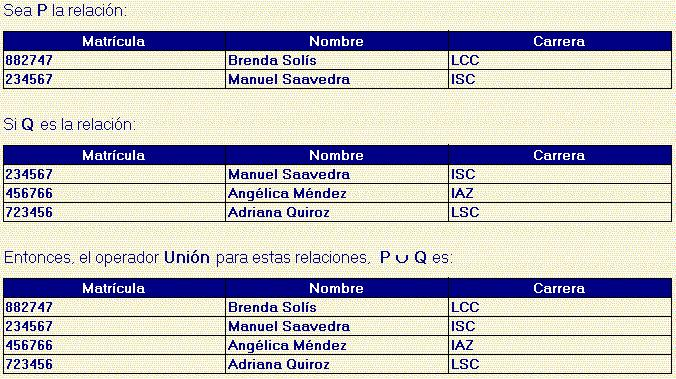
¿Qué particularidad tiene la tupla que se refiere a Manuel Saavedra respecto a la unión?
label_outlineOperador Intersección
Considerando las mismas relaciones del ejemplo anterior:
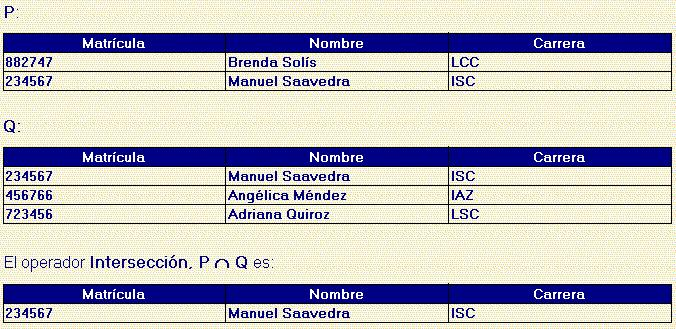
label_outlineOperador Diferencia
Considerando nuevamente las mismas relaciones:
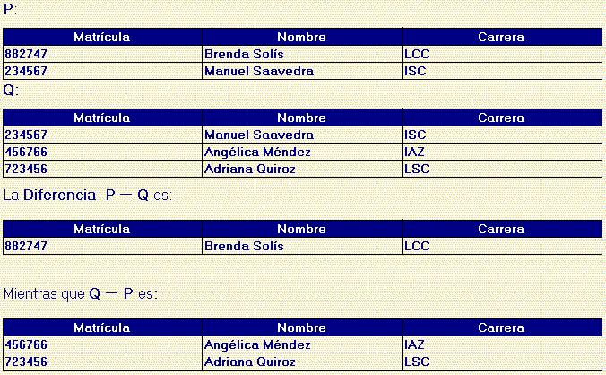 <
¿Son la intersección y la unión conmutativas? ¿Lo es la diferencia?
¿Qué características deben tener las relaciones a las que se les aplican los operadores Unión, Intersección o Diferencia?
label_outlineOperador Proyección
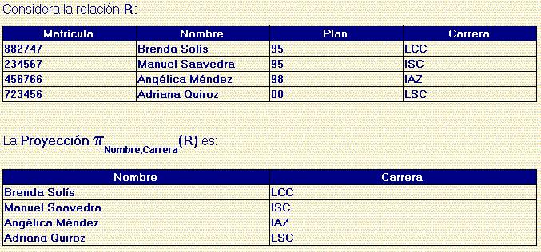
label_outlineOperador Selección
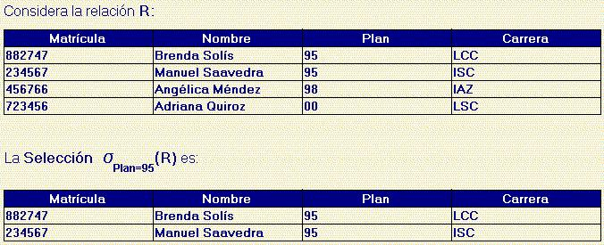label_outlineOperador Join Natural
Considera las relaciones
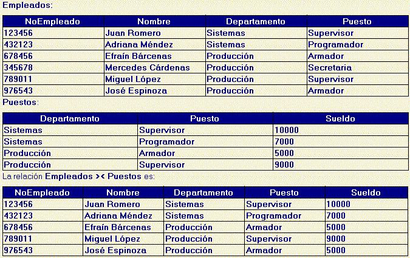
label_outlineOperador Teta-Join
Considera las relaciones:
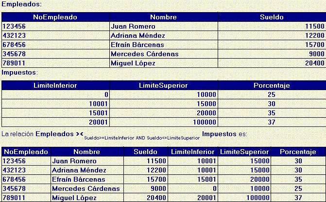Observa que en este caso no hay columnas en común, pero la condición que se indica explícitamente para el operador Teta-Join indica que condiciones deben cumplir las tuplas de una relación para asociarse con una tupla de la otra relación.
labelProducto cartesiano
Producto cartesiano de dos relaciones de cardinalidades m y n es una relación cuyo esquema estará definido sobre la unión de los atributos de ambas relaciones, y cuya extensión estará constituida por las m x n tuplas formadas concatenando cada tupla de la primera relación con cada una de las tuplas de la segunda. Se denota por la letra x.
Relacion1 x Relacion2
Ejemplo:
SOCIO
Codigo |
Nombre |
Direccion |
1 |
Elena |
Madrid |
2 |
Manuel |
Bilbao |
LIBRO
Libro |
Autor |
Editorial |
BD |
Gardarin |
McGraw |
INFORMIX |
Zeroual |
Ra-Ma |
SOCIO x LIBRO
| Código | Nombre |
Direccion |
Libro |
Autor |
Editorial |
1 |
Elena |
Madrid |
BD |
Gardarin |
McGraw |
1 |
Elena |
Madrid |
INFORMIX |
Zeroual |
Ra-Ma |
2 |
Manuel |
Bilbao |
BD |
Gardarin |
McGraw |
2 |
Manuel |
Bilbao |
INFORMIX |
Zeroual |
Ra-Ma |
La división de dos relaciones es otra relación cuya extensión estará formada por las tuplas que al completarse con las tuplas de la segunda relación permiten obtener la primera. Se denota por el símbolo :
Relacion1 : Relacion2 = PA(Relacion1) - PA[(PA(Relacion1) x Relacion2) - Relacion1]
A = { Atributos Relacion1 – Atributos Relacion 2}
Ejemplo de división de dos relaciones.
VINO
Tipo |
Cosecha |
Calidad |
Albariño |
1977 |
Bueno |
Ulla |
1978 |
Malo |
Condado |
1977 |
Bueno |
Condado |
1978 |
Bueno |
Amandi |
1978 |
Bueno |
CALIDAD_BUENA
| Cosecha | Calidad |
1977 |
Bueno |
1978 |
Bueno |
VINO : CALIDAD_BUENA
Tipo |
Candado |
Es un operador muy útil para simplificar consultas como en el ejemplo donde se desea obtener los vinos con buena calidad en todas las cosechas.